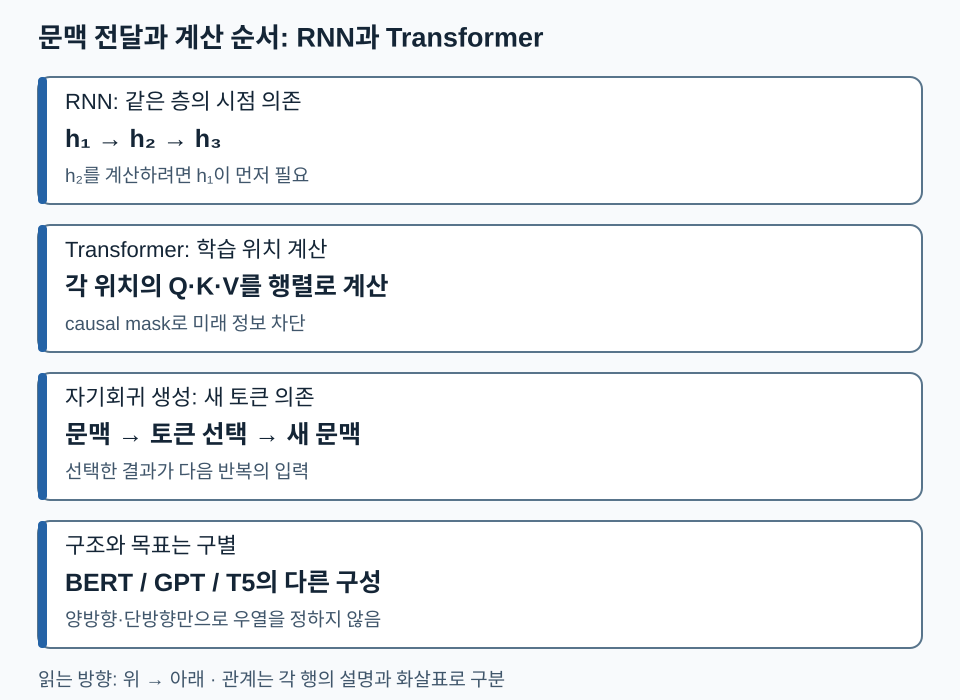
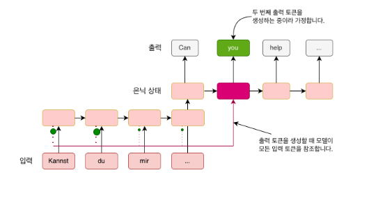
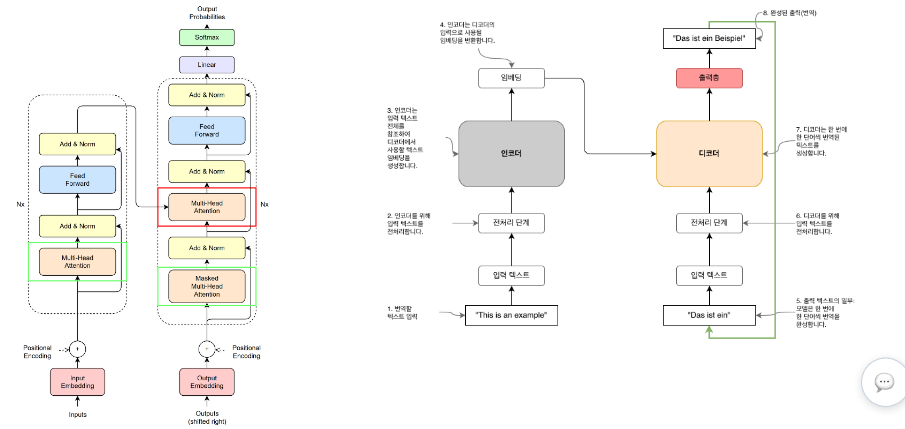

06. 언어 모델의 발전 — 문맥을 어디에 담고 어떻게 전달할까
언어모델은 문맥을 바탕으로 토큰의 확률을 예측하는 모델입니다. 이 단원은 RNN의 순차 상태 전달과 Transformer의 Attention을 비교하고, Encoder·Decoder·학습 목표를 분리해 설명하는 것이 목표입니다. 먼저 ‘벡터는 숫자 목록’이라는 점만 알면 읽을 수 있습니다. 내적은 같은 길이 벡터의 좌표별 곱을 합하는 연산입니다.
1. 규칙에서 학습된 표현으로
68쪽의 규칙 기반 번역은 형태소·구문을 분석하고, 사람이 정한 변환 규칙으로 어순을 배열합니다. 예외 규칙의 설계와 유지에 비용이 듭니다. 학습 기반 모델은 데이터에서 표현과 변환을 학습하지만 데이터 편향과 보지 못한 입력의 오류가 생깁니다. ‘학습한다’는 말이 규칙이나 검증이 필요 없다는 뜻은 아닙니다.
Encoder는 입력을 다른 처리에 사용할 표현으로 바꾸는 부분이고, Decoder는 그 표현 또는 앞선 출력 문맥을 사용해 결과를 만드는 부분입니다. 이 이름은 역할입니다. Encoder가 텍스트만 받거나 Decoder가 항상 별도 Encoder를 필요로 하는 것은 아닙니다.
2. RNN이 문맥을 기억하는 방법과 한계
RNN(Recurrent Neural Network)은 이전 상태 h_(t-1)와 현재 입력 x_t로 새 상태 h_t=f(h_(t-1),x_t)를 계산합니다. 상태는 지금까지 읽은 정보의 요약입니다. 길이가 다른 입력에도 같은 계산을 반복할 수 있지만, 시점 t를 계산하려면 t-1이 필요합니다. 긴 경로로 기울기를 전달하는 학습도 어려워집니다.
의존성만 보는 교육용 덧셈 RNN h_t=h_(t-1)+x_t, h₀=0, 입력 [2,5,1]이면 상태는 2→7→8입니다. 두 번째 입력을 6으로 바꾸면 상태는 2→8→9입니다. 단, 덧셈은 순서가 바뀌어도 최종 합이 같으므로 이 예시가 실제 언어 RNN의 표현 능력을 보여주는 것은 아닙니다. 실제 학습된 비선형 갱신은 순서에 민감할 수 있습니다.
RNN Attention은 한 최종 요약 벡터에만 의존하지 않고 필요한 입력 위치의 상태를 골라 섞게 합니다. ‘앞 정보를 선택해서 참조할 수 있다’는 장점이 생기지만, 기반 RNN의 순차 상태 계산 자체가 사라지지는 않습니다.
3. Transformer는 어떤 의존성을 바꾸나
Transformer는 같은 층에서 토큰들이 서로 참고할 관계를 Attention으로 계산합니다. FFN(Feed-Forward Network)은 각 위치의 벡터를 비선형 변환합니다. Attention이 위치 간 정보를 섞는 역할이라면 FFN은 각 위치의 특징을 가공합니다.
훈련에서는 정답 시퀀스가 이미 있으므로 모든 위치의 계산을 행렬 연산으로 묶을 수 있습니다. GPT에서는 미래 정답을 훔쳐보지 않도록 causal mask가 필요합니다. 반면 생성할 때는 아직 다음 토큰을 모르므로, 한 토큰을 선택해 문맥에 추가한 뒤 다시 계산합니다. 학습 위치의 병렬 계산과 생성 토큰의 순차성은 동시에 성립합니다. 병렬화가 모든 길이·장치에서 자동으로 빠르다는 뜻도 아닙니다.
다음 비교도에서는 RNN의 상태 의존, Transformer 학습의 위치 계산, 생성의 새 토큰 의존을 서로 구별하세요. 각 행의 화살표는 그 행 안의 계산 의존성을 뜻합니다.

따라서 ‘Transformer는 병렬’이라는 한 문장만으로 생성 절차까지 설명할 수 없습니다. 다음 토큰이 이전 선택에 의존하는지 질문하면 두 경우를 나눌 수 있습니다.
4. BERT·GPT·T5: 구조와 과제를 같은 표에서 구별하기
| 대표 구성 | 입력 문맥을 보는 방식 | 대표 사전학습 과제 | 자연스러운 사용 예 |
|---|---|---|---|
| BERT형 Encoder | 입력 안에서 양쪽 문맥 참조 | 가린 토큰 예측(MLM) | 문장 표현·분류·검색 표현 |
| GPT형 Decoder-only | 해당 위치까지의 앞 문맥 참조 | 다음 토큰 예측 | 이어쓰기·자기회귀 생성 |
| T5형 Encoder–Decoder | Encoder는 입력을 읽고 Decoder는 앞 출력과 입력 표현 참조 | 손상된 연속 구간 복원 | 입력 텍스트를 출력 텍스트로 변환 |
교안 75쪽은 BERT와 T5를 빈칸 복원 계열로 묶습니다. 보충 구분: T5의 대표 목적은 span corruption이며 BERT와 구조·출력 방식이 같은 것은 아닙니다. T5의 Decoder는 복원할 문자열을 순차 생성합니다. T5 원 논문, 3.3~3.5절.
이 표는 가능한 작업의 제한 목록이 아닙니다. 모델을 목적에 맞게 미세튜닝할 수 있습니다. ‘양방향이므로 더 우수’처럼 서로 다른 학습 조건의 모델을 한 순위로 매기지 않습니다.
5. 확인 질문
- Transformer로 학습했으니 100개 새 토큰도 언제나 한 번에 생성할 수 있나요?
- RNN에 Attention을 붙이면 RNN 상태 계산의 순차 의존도 없어지나요?
- 빈칸 복원을 학습했다는 이유로 BERT와 T5의 구조가 같다고 말할 수 있나요?
해설과 돌아갈 위치
- 일반 자기회귀 생성에서는 앞에서 선택한 토큰이 다음 입력이므로 순차 반복합니다. 3절.
- 참조할 정보 통로가 늘어나도 기반 상태 갱신은 순차적입니다. 2절.
- 아닙니다. Encoder-only와 Encoder–Decoder의 차이가 있고 T5는 복원 문자열을 Decoder로 만듭니다. 4절.
다음 연결: 어떤 구조든 먼저 문자열을 숫자 ID와 벡터로 바꿔야 합니다. 다음 단원에서 입력·정답이 만들어지는 경로를 추적합니다.
6. 언어모델의 확률과 번역의 연결
언어모델의 핵심 출력은 문장이 아니라 후보 토큰에 대한 조건부 확률입니다. 토큰열의 확률은 P(w₁,…,wₙ)=∏ₜP(wₜ|w₁,…,wₜ₋₁)로 분해합니다. 교육용 예로 시작 토큰 뒤 ‘나는’ 확률이 0.5, 그 뒤 ‘간다’가 0.4, 끝 토큰이 0.8이면 해당 완결 시퀀스 확률은 0.5×0.4×0.8=0.16입니다. 후보 확률 합은 각 위치에서 1이어야 합니다. 가장 높은 확률의 토큰을 매번 고르는 것과 전체 시퀀스 확률을 최대화하는 것은 같은 문제가 아닙니다.
번역은 여기에 입력 문장이라는 조건을 더합니다. 원문 68쪽의 독일어 단어별 번역은 Can you me help this sentence to translate처럼 어순이 어긋나지만, 대응 화살표를 재배열하면 Can you help me to translate this sentence가 됩니다. 형태소는 단어의 작은 구성 단위, 구문은 단어 사이의 문장 구조입니다. 단어 사전만으로는 구조를 결정할 수 없어 분석과 변환 단계가 필요합니다.
7. 그림에서 읽는 정보의 통로
먼저 한 마지막 상태만 넘길 때와 여러 상태를 선택할 때의 차이를 보세요.

아래쪽 입력 Kannst, du, mir, …에서 위쪽 은닉 상태로 정보가 올라가고, 선택된 입력 정보가 출력 you를 계산하는 현재 상태에 연결됩니다. 빨간 점선과 초록 점은 참조 통로를 강조하며 수치 확률의 눈금이 아닙니다. 모든 이전 상태를 보관하면 최종 상태 하나의 병목을 줄이지만 저장 비용이 늘어납니다. ‘가장 최근 정보가 가장 뚜렷하다’는 70쪽 문구는 가능한 장기 의존성 문제를 설명한 직관이지 모든 RNN의 기억에 대한 정리는 아닙니다.
다음 그림에서 입력 쪽과 출력 쪽을 가로지르는 선이 어디에 도착하는지 추적하세요.

왼쪽 Encoder는 입력 임베딩에 위치 정보를 더하고 self-attention, FFN, 잔차 덧셈과 정규화를 반복합니다. 오른쪽 Decoder의 아래 attention은 앞 출력만 보도록 가리고, 가운데 attention은 Encoder 출력을 참조합니다. 이 두 attention을 구분해야 ‘Decoder-only’가 원래 Decoder의 모든 부분을 그대로 가져온다는 오해를 피합니다. 오른쪽 번역 예시의 초록색 귀환 화살표는 생성 결과를 다음 입력으로 돌리는 반복입니다. 위쪽 Linear는 벡터를 어휘별 점수로, Softmax는 점수를 확률로 바꿉니다. Nx는 블록 반복 횟수이며 토큰 수가 아닙니다.
77쪽은 GPT의 입력→임베딩→반복 블록→출력 흐름을 확대합니다. Q와 K의 MatMul은 관련도 점수, Scale은 크기 조절, Mask는 참조 제한, Softmax는 가중치, 마지막 V와의 MatMul은 값의 가중합입니다. FFN 그림의 두 선형 변환 사이 GELU는 비선형성입니다. 이 장의 목표는 구성요소의 역할 구별이며 세부 계산은 이후 Attention 장에서 이어집니다.
8. 짧은 적용 활동과 해설
활동 A: 번역 문장 앞부분을 읽던 RNN의 두 번째 입력만 바꾸면 어느 상태를 다시 계산해야 할까요? 해설: 그 입력에 대응하는 상태와 이후 상태입니다. 이전 상태에는 변경된 입력이 없고 이후 상태는 변경된 상태에 의존합니다.
활동 B: 나는 [빈칸] 먹었다와 나는 뒤의 다음 토큰 예측에서 보이는 문맥을 쓰세요. 해설: 빈칸 복원은 ‘먹었다’도 볼 수 있지만 causal 예측은 미래 토큰을 볼 수 없습니다. MLM은 Masked Language Modeling, CLM은 Causal Language Modeling입니다. 빈칸 정답은 문맥과 데이터에 따라 여러 개일 수 있습니다.
활동 C: 문장 분류·번역·이어쓰기에 각각 자연스러운 구조를 고르고 이유를 말하세요. 해설: 전체 입력 표현을 쓰는 Encoder, 입력을 읽고 다른 문자열을 내는 Encoder–Decoder, 앞 문맥을 이어가는 Decoder-only를 고를 수 있습니다. 이는 사용 금지 규칙이나 성능 순위가 아닙니다.
보충 근거: 구조와 병렬화는 Transformer 원 논문, T5의 span 복원과 text-to-text 구성은 T5 원 논문을 기준으로 구분했습니다. 본문의 수치 활동은 교육용이며 실제 모델 측정값이 아닙니다.
페이지별 원문 관찰
67쪽 언어 모델의 발전 · 68쪽 규칙기반 번역 · 69쪽 Encoders와 Decoders · 70쪽 RNN · 71쪽 RNN Attention · 72쪽 Transformer 비교 · 73쪽 Transformer 구조 · 74쪽 BERT GPT T5 구조 · 75쪽 MLM과 CLM · 76쪽 언어 모델 비교 · 77쪽 GPT 확대 구조